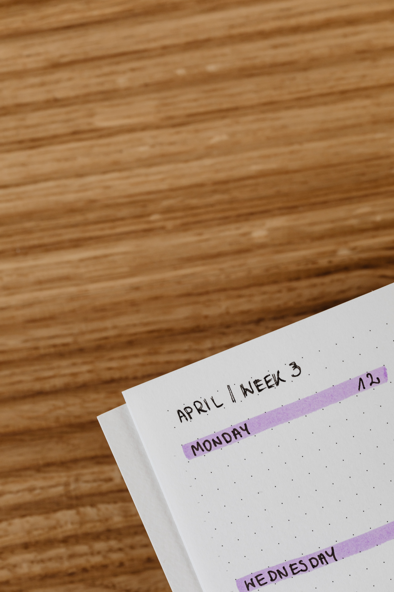

HABIT TRACKER / PAINEL PESSOAL
Pequenas ações.
Progresso real.
Registre hábitos possíveis, acompanhe o que concluiu hoje e veja seu progresso em um só lugar.
Adicionar meu primeiro hábito
ROTINA DIÁRIA
Seus hábitos
- Você ainda não cadastrou hábitos.
Seus registros ficam armazenados neste navegador. Eles não são enviados automaticamente para uma conta ou para o GitHub.